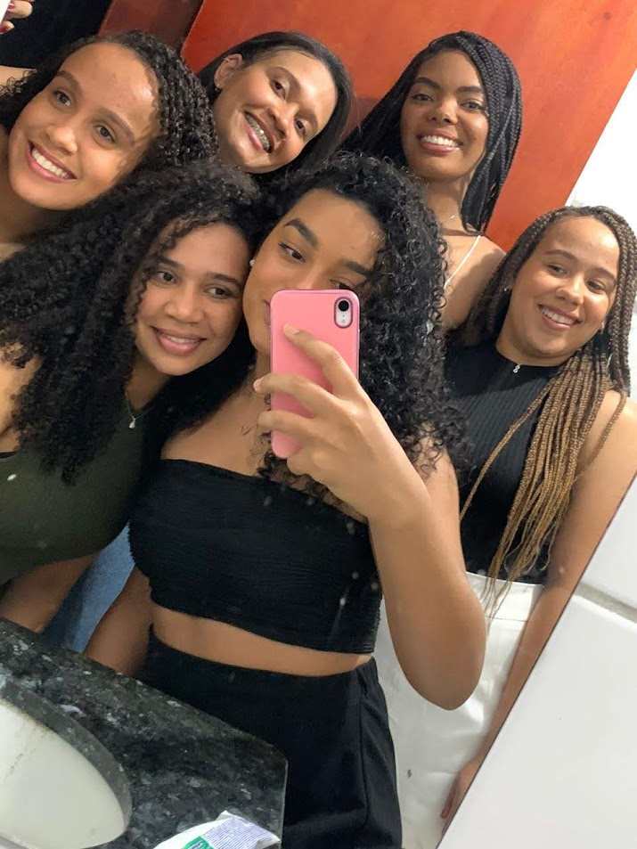
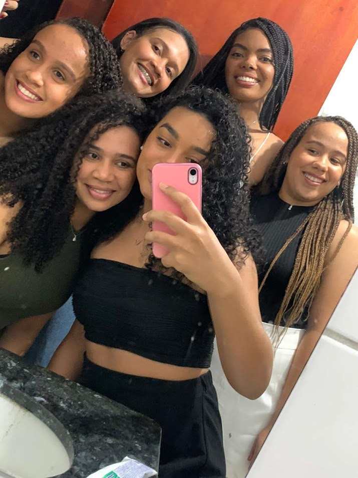
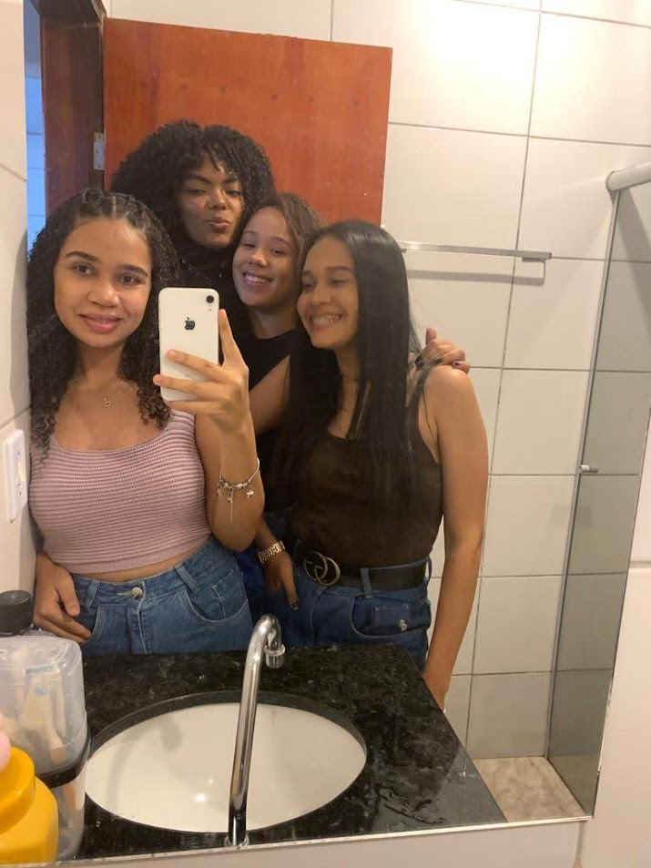
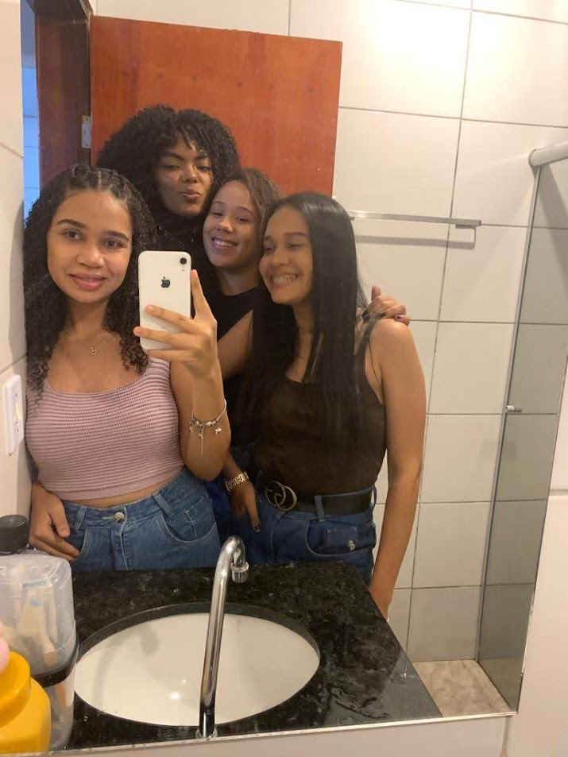

Nanda
Nanda é aquela presença tranquila que todo grupo precisa — a mais calma, a mais sensata, e com um jeitinho de falar que acalma até coração ansioso
Foi ela quem falou sobre Urutaí e fez acontecer esse encontro lindo que nos trouxe até aqui. E por isso (e por muito mais), somos gratas demais!
Com seu jeitinho doce e sempre atencioso, ela é um amor de pessoa — daquelas que escuta com o coração e aconselha com sabedoria
Ter a Nanda por perto é certeza de paz, carinho e boas decisões (porque quando a Nanda fala, a gente para pra ouvir!).
Ela é o elo que nos uniu e que torna nosso grupo ainda mais especial. Amiga assim é presente raro — e nós temos a sorte de ter!
Momentos com Nanda üì∏

 

 
